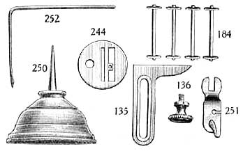

Online Manuals Section
FOR USING THE
FLAT TENSION, VIBRATING SHUTTLE
NEW HOME
SERIES A
SEWING MACHINE
Lower Thread Breaking
This may be caused by the shuttle being wrongly threaded; the tension being too tight; the bobbin being wound too full, so it will not revolve freely; a rough or sharp place on the edge of the shuttle at the heel; or by failing to keep the shuttle race clean. For sewing heavy goods be careful to have the needle and cotton, (or silk), according to scale. When needle coarser than (1) is used, put in the throat plate with large needle hole, and lengthen the stitch according to thickness of goods.
Threading Machine
Put spool upon spindle (80), then, with the left hand catch the thread in slot (102) and draw it between the spring and cap (103) toward the needle bar, then under spring eyelet (15), up through slot in needle bar (46), down back of the staple (19), then with the thumb and forefinger of the left hand, catch the thread in center of staple (19), and draw it toward you around the hook of the take-up; then down through eye of needle from left to right, leaving about four inches of thread free.
Upper Thread Breaking
This may be caused by improper threading of the machine; the upper tension being too tight; the needle being too small for the thread; the needle being set the wrong side out, or set crooked; or, the needle being too large for the hole in the throat plate.
To Regulate the Tension
After threading the shuttle, try the tension by drawing the thread toward the blunt end; if it draws tightly, it is right for goods of firm texture; thin, soft goods require a loose tension. To obtain more or less tension, put more or less pressure on the shuttle tension spring, as described heretofore.The tension of top thread is adjusted by tension screw 104, turning to the right to tighten, and to the left to slacken it. Care must be taken in regulating the tension of the lower and upper threads. If the tension on either thread is too tight, it will cause the thread to break and the seam will be puckered. If there is not sufficient tension, the thread will not be drawn into the fabric, but will lie in loops on the under side. When both tensions are properly adjusted, both threads are drawn to the centre of the fabric as shown in figure A.
If the shuttle thread is very tight, and the upper thread too loose, the under thread will lie straight as shown in figure B, because there is not sufficient upper tension to draw the under thread in. On the other hand, if the shuttle thread draws off too easily and the upper thread is too tight, the under thread will draw through the fabric and the upper thread will lie straight as shown in figure C.
The NEW HOME Sewing Machine requires less change of tension than others, and it is seldom necessary to change the tension of the under thread. Always regulate the tension by adjusting the upper tension if possible.
To Draw Up Shuttle Thread
Take hold of the balance wheel with one hand and the needle thread with the other, keeping the latter slack, so as not to spring the needle; move the wheel toward you once around and pull up the needle thread with your hand, to draw the shuttle thread up through the throat plate hole. Then take both threads and pass them under the presser foot, toward the back of the machine.
Missing Stitches
Should there at any time be skipped or long stitches at intervals, it is owing to the needle being set too low, or its having become bent away from the shuttle, or its being too small for the thread in use, and sometimes to the point of the shuttle becoming accidentally blunted. When using very fine needles, and also when stitching heavy work, be sure that the points of the needles are perfect.
Ready for Sewing
The machine being fully threaded above and below, and the shuttle thread drawn up, you are ready to commence sewing.
Raise the presser foot by presser lifter (to the right for heavy work, to the left for hemming and felling), put the work under, and let the presser foot down upon the work.
Avoid pushing or pulling the goods through while stitching. In turning a corner stop the machine without raising the needle more than half way out of the work; raise the presser foot and turn the work in the manner desired, using the needle as a pivot.
Length of Stitch
On the stitch regulator scale will be found marks of different lengths; from these select the length of stitch you want; then loosen the thumb screw and move it opposite tot he mark chosen; and tighten it. The Nos. 32, 22, 16, etc., give the numbers of stitches to the inch. You can vary the stitch from the scale by setting thumb screw between numbers.
To Remove the Work
Raise the needle bar to its highest point, lift the presser foot, release the tension of the upper thread by pressing down on the tension releaser, at the same time with the left hand draw the work from you and a little to the left. Cut the thread, leaving about four inches with which to commence sewing.
To Adjust Presser Foot
At the top of the Machine, back of the needle bar, will be found a screw, which, by turning to the right, increases, and to the left, decreases the pressure of the presser foot. Heavy goods require more pressure than light goods. Too much pressure will pucker fine cloth, while too little pressure on heavy cloth will let presser foot rise as the needle ascents. Care should be taken to adjust the pressure correctly. All machines are properly adjusted for ordinary work, the screw should not be changed except on extra thick or thin goods.
Gauge
Every machine has a Gauge. It is attached to the bed plate by means of the thumb screw, and used for enabling the operator to sew at a given distance from the edge of the goods.
To Hemstitch
Fold blotting paper (or other soft paper) which can be readily torn, until you get thickness corresponding to the opening desired in the hem-stitching; put one of the pieces of goods under the paper and the other above, then place all under the presser foot and sew through them. After being sewed, both pieces will be double. Fold back the cloth first on one side, then on the other, all in the same direction and hold firmly while you tear out the paper. Remove the other half of the paper and open the hem-stitching, one edge of each, or either piece may be cut and passed through the hemmer, or a row of stitching can be passed along side the hem-stitch, and the double edge finished off as you choose.
To Remove the Foot
Raise the needle bar to its highest point, loosen the binding nut which is just above the foot, by turning to the right, then draw the foot out.
To Select Needles and Thread
| Size of Needle | Class of Work To Sew | Size of Cotton, Linen or Silk |
|
O
|
Very Fine Thin Muslins, Cambrics, Linens, etc. | 120 to 300 Cotton |
|
B
|
Very Fine Calicoes, Linens, Linen Shirtings, Fine Silk Goods, etc. |
90 to 120 Cotton 000, & 00 Silk Twist |
|
1/2
|
Shirtings, Sheetings, Bleached Calicoes, Muslins, Silks and General Domestic Goods, and all classes of General Work. |
60 to 90 Cotton 0 and 00 Silk Twist |
|
1
|
All kinds of Heavy Calicoes, Light Woolen Goods, Heavy Silks, Seaming, Stitching, etc. |
40 to 60 Cotton A and 0 Silk Twist |
|
2
|
Tickings, Woolen Goods, Trousers, Boys' Clothing, Corsets, Cloaks, Mantles, etc. |
24 to 40 Cotton A and 0 Silk Twist |
|
3
|
Heavy Woolens and Tickings, Bags, Heavy Coats, Trousers, and Heavy Clothing generally | 10 to 24 Cotton, A and B Twist, and 60 to 80 Linen |
|
4
|
Bags, Coarse Cloths, Heavy Goods of any texture. | 40 to 60 Linen, B, C, & D Silk Twist, or very Coarse Cotton |
For Needles O, B, 1-2 and 1, use throat plate with Small needle hole; for 2, 3, and 4 use throat plate with Large hole.
Stamped on front shuttle slide will be found a scale for selecting thread and needles.
Outfit
Every new home Sewing Machine is threaded up and ready for use when it leaves our factory, accompanied by the following accessories; 135 Gauge; 136 Gauge Screw; 244 Throat Plate, coarse; 250 Oil Can, filled; 252 Quilter; 184 Four Bobbins, one of which is filled ready for use in shuttle; 251 Hemmer and Feller, Package of Assorted Needles.
